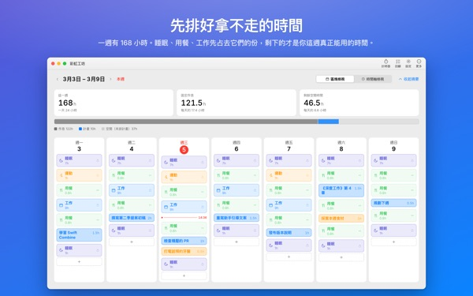
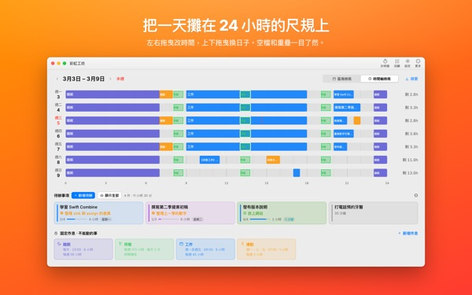
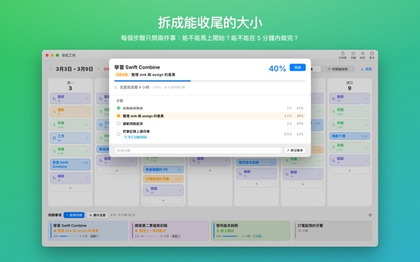
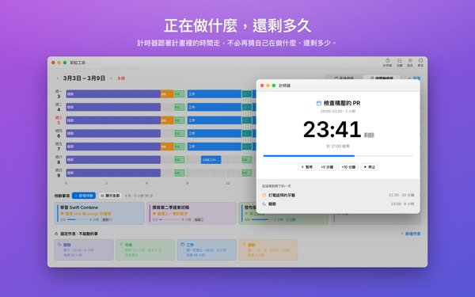
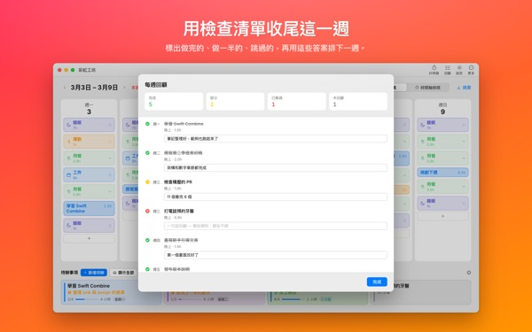

這一週，
真的排得下嗎？
彩虹工坊是一款依星期和時段攤開一週的 Mac App。先放下睡眠、用餐、工作這些省不掉的時間，再把待辦拖到剩下的空位，親眼確認哪些放得進去。
計畫、作息、待辦、回顧、計時器和匯入行事曆都能免費使用。

在這裡排一週看看
我們先放好了 App 第一次開啟時建議的四項作息。試著開關作息，再把待辦放到某一天。
待辦越列越長，一週卻總是不夠用？
只看清單，看不出這週能不能全部做完。扣掉睡眠、吃飯和通勤早已佔走的時間，剩下的往往比想像中少。彩虹工坊用數字和格子把剩下的時間擺在眼前，讓你把每件待辦放到真實的位置試試看。
在 24 小時刻度上看一天
時間軸檢視把一天攤在 24 小時刻度上，空檔和重疊一目瞭然，重疊的行程要怎麼排也由你決定。
Mac 行事曆裡的會議和約會直接匯入，不必再寫一次。需要的話，也能把計畫寫進 App 另外建立的彩虹工坊行事曆，在 iPhone 行事曆裡也看得到。其他行事曆一律不動。

拆成做得完的大小
大工作卡住，通常是因為還有什麼擋在前面。App 會對每一步問兩件事：能不能不用準備就開始？能不能在 5 分鐘內做完？
兩個都是，就是一塊「碎片」，每空出 5 分鐘就能拿來做。其他的需要另外留時間。App 判斷錯了，改過來就好。

正在做什麼，還剩多久
到了開始時間，計畫會變成進行中；時間一過，會問你做完沒有。計時器跟著時間表走。
目前計時小工具不用打開 App，就能顯示正在做的事和剩餘時間。

用一張清單收尾一週
每週回顧是每天一張卡片。標出做完、做一半、跳過，再用這些答案排下一週。
同一個 iCloud 帳號下，待辦會在這個 App 和 iPhone App Rainbow of Desire 之間同步，在 Mac 排好的今天，出門也能查看。

三個步驟就能開始
- 1
先定下省不掉的時間
把睡眠、用餐、工作這類每週都有的時間設成作息。App 不會先幫你填任何東西。
- 2
寫下待辦
在畫面下方的待辦事項裡一行寫一件。什麼時候做，現在還不用決定。
- 3
拖到某一天
放到哪天，就成了那天的計畫。日期變了，再拖到別天或拖回清單就好。
照建議的作息算一算
- 一週
- 168 小時
- 睡眠 · 每天 8 小時
- 56 小時
- 用餐 · 每天三次
- 17.5 小時
- 工作 · 學校 · 平日 9 小時
- 45 小時
- 運動 · 週一、三、五 1 小時
- 3 小時
- 這週真正能用的時間
- 46.5 小時
這些只是範例。作息依自己的生活來選、來改。休假或出差不上班的那天，單獨拿掉就好。
過好這一週需要的，全部免費
免費
- 週計畫與日計畫、作息、待辦（數量不限）
- 時間軸檢視和步驟拆分
- 每週回顧，並可複製成文字
- 計時器和目前計時小工具
- 從行事曆匯入
- 與 iPhone 上的 Rainbow of Desire 同步
- 最近 2 週的回顧趨勢
Plus · Pro
- Plus：8 週回顧趨勢，看出狀態好的日子和時段
- Plus：計畫與實際花費的時間
- Plus：把順利的一週計畫一次鋪到本週
- Pro：包含 Plus 全部內容，並可用唯讀連結分享我的行程
- Pro：買一次，iPhone App 也一起開啟 Pro
每一級都可選年度訂閱，或一次買斷終身使用
價格請在 App 或 App Store 查看。年度訂閱若未在當期結束前至少 24 小時取消，將自動續訂。在 iPhone 上買的 Pro，在同一個 iCloud 帳號的 Mac 上也能用。
常見問題
一定要登入 iCloud 嗎？
只在 Mac 上自己用就不需要。要和 iPhone 同步、要分享行程時才需要。
App 會改動我的行事曆嗎？
原本的行事曆一律不改。從行事曆匯入只會讀取你選的行事曆。開啟「把計畫寫入彩虹工坊行事曆」後，App 會另外建立彩虹工坊行事曆，只寫在那裡。這個行事曆隨時可以在行事曆 App 裡刪除。
在 Mac 寫的待辦，iPhone 上看不到。
請確認兩台裝置登入的是同一個 iCloud 帳號，而且 iPhone 上有安裝 Rainbow of Desire。同步會經過 iCloud，可能需要幾分鐘。
關掉視窗，App 就結束了嗎？
不會。關掉視窗後 App 仍在執行，可以從選單列的「視窗」重新打開，點 Dock 圖像也可以。
更新後，寫好的待辦和計畫還在嗎？
都在。更新不會更改或刪除你寫下的內容。
想換介面語言。
在設定最上方的 Language · 언어 · 語言 選擇，App 會重新開啟並切換。支援 23 種語言。你自己寫的作息名稱和待辦不會被翻譯。
換了 Mac，Plus 或 Pro 不見了。
用同一個 Apple 帳號登入後，點設定裡的「恢復購買」。取消訂閱請到 App Store 的帳號設定。
我寫的內容存在哪裡？
沒有帳號、不用註冊，也沒有存放計畫的開發者伺服器。寫下的內容只在你的裝置和你自己的 iCloud 裡。App 會傳送不含你所寫內容的匿名使用統計，可以在設定裡關閉「傳送匿名使用統計」。
用起來卡住或發現怪怪的地方，請寫信到 mizzking75@gmail.com。App 的設定裡也有聯絡我們的選項。